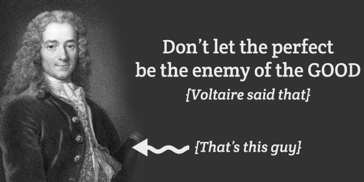

The Practical Utopian
The Practical Utopian
Imperfection
By Herb Bowie
tags: imperfection

One of the Practopian Principles states that:
We harbor no romantic notions about the perfectibility of humans or of human society: we are satisfied with progress, and do not demand perfection.
Belief in imperfection as a fundamental principle may seem like an odd concept but, in fact, it is an essential part of our thinking.
Let's look at some of the reasoning behind this principle.
First, as Voltaire wisely said, “Perfect is the enemy of good.”
Elaborating on this idea, Robert Watson-Watt, who developed early warning radar in Britain during WW II, propounded a “cult of the imperfect.” He went on to explain: “Give them the third best to go on with; the second best comes too late, the best never comes.”
This idea became a central tenet of many business improvement programs over the last twenty years or so, because it happily trades off a very theoretical and elusive perfection at some distant point in the future in exchange for smaller, incremental, and very real short-term improvements.
This idea also underlies the software development principle calling for “Just Enough Design Up Front,” acknowledging that trying to perfect a big design before actual coding begins often results in an unworkable system.
But a Practopian belief in imperfection is also necessary for consistency with our beliefs in balance and in an integral perspective. If we believe that we have a perfect approach, then why try to balance it against others? And if we already have the perfect perspective, then why try to integrate the views of others?
A belief in perfection can lead to stasis and stagnation. For example, if we believe that our nation is perfect, or that our form of government is perfect, then we will likely not tolerate criticism of it, and will stop trying to improve it. On the other hand, if we admit that, however good it may be, it is still imperfect, we will remain open to ideas for further refinement.
A belief in imperfection is also necessary to achieve the sort of humility that is required to accommodate beliefs in equality and diversity. If we believe that we are perfect, or are part of a perfect group of people, then we will naturally start to look down on others unlike ourselves as inferior.
An understanding of our own imperfection also allows us to laugh at ourselves from time to time, and to fully appreciate some of the sillier aspects of our humanity. Without this ability to laugh at ourselves, it is hard for us to fully connect with others, since we will instead hide our true selves behind a shield of pretended perfection, and have difficulty forgiving the shortcomings of others.
Interestingly, when popular author Brené Brown had to come up with a title for her book about wholehearted living, she chose to call it The Gifts of Imperfection, with the subtitle: “Let Go of Who You Think You're Supposed to Be and Embrace Who You Are.” And so this too is part of our reason for a belief in imperfection: if we humans are constantly trying to live up to some theoretical ideal, then it will be hard for us to fully discover and accept our deeper and more authentic natures.
Published 2018 Oct 11
 Content at Practopian.org is Copyright © 2009 - 2020 by Herb Bowie except where otherwise noted
Content at Practopian.org is Copyright © 2009 - 2020 by Herb Bowie except where otherwise noted